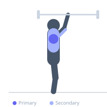

Exercise guide / Landmine Press
Landmine Press
The landmine press is a shoulder pressing exercise where one end of a barbell is anchored to the floor (in a landmine attachment or corner) while the other end is pressed overhead in a natural arc. The angled pressing path is shoulder-friendly compared to vertical overhead pressing, making it an excellent option for lifters with shoulder impingement or limited shoulder mobility while still providing significant anterior deltoid and triceps stimulus.
Primary muscles
deltoid anterior
deltoid lateral
Secondary muscles
triceps lateral head
triceps medial head
pectoralis major clavicular
trapezius upper
Stabilizers
internal oblique
external oblique
transverse abdominis
Equipment
Standard Barbell


Starting position
- Anchor one end of a barbell in a landmine attachment or wedge it in a corner. Kneel or stand facing the barbell's loaded end, holding it at shoulder height with one hand (or both hands clasped together).
Setup
- Insert one end of a barbell into a landmine base or secure it in a corner on a mat. Load the opposite end with appropriate weight. Kneel or stand facing the loaded end.
Steps
- Step 1: Hold the end of the barbell at shoulder height with the hand of the pressing side. Stagger your stance or kneel for stability.
- Step 2: Brace the core firmly. The barbell will arc forward and upward on a fixed path.
- Step 3: Exhale and press the barbell end upward and forward in its natural arc until the arm is fully extended.
- Step 4: Inhale and lower back down along the same arc to shoulder height. Complete reps, then switch sides.
Coaching cues
- Let the bar's natural arc guide your press — don't fight it
- Squeeze your core like a vise throughout the movement
Breathing
- Exhale on the press; inhale on the descent.
Range of motion
- Press to full arm extension along the arc; return to shoulder height.
Tempo
- 2-0-2-0
Common mistakes
- Letting the torso rotate as you press — brace to resist rotation
- Pressing straight up rather than allowing the barbell to follow its natural arc
Safety
- The angled path is naturally shoulder-friendly, but stop if pain is felt at any point
Training
- strength: 5–8 reps
- hypertrophy: 8–15 reps
- endurance: 12–20 reps
- strength: 3–4 sets
- hypertrophy: 3–4 sets
- endurance: 2–3 sets
- Rest: {'strength': 150, 'hypertrophy': 90, 'endurance': 45}